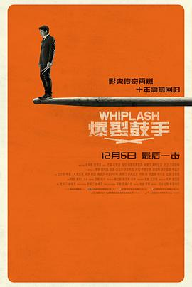

爆裂鼓手 / Whiplash
又名：鼓动真我(港) / 进击的鼓手(台) / 鼓动人生(台) / 鞭打 / The Whiplash Drummer
有天赋还远远不够
作品信息
| 导演 | 达米恩·查泽雷 |
| 编剧 | 达米恩·查泽雷 |
| 主演 | 迈尔斯·特勒 / J·K·西蒙斯 / 保罗·雷瑟 / 梅莉莎·班诺伊 / 奥斯汀·斯托维尔 / 内特·朗 / 克里斯·马尔基 / 达蒙·冈普顿 / 苏安妮·斯波克 / 马科斯·卡锡 / 查理·伊恩 / 杰森·布莱尔 / 科菲·斯里博伊 / 卡维塔帕蒂尔 / C·J·瓦纳 / 塔里克·洛维 / 卡尔文·C·温布什 / 迈克尔·D·科恩 / 艾普尔·格雷斯 / 马库斯·亨德森 / 亨利·G.桑德斯 / 温迪·李 / 米歇尔·拉夫 |
| 类型 | 剧情 / 音乐 |
| 制片国家/地区 | 美国 |
| 语言 | 英语 |
| 上映日期 | 2024-12-06(中国大陆) / 2014-01-16(圣丹斯电影节) / 2014-10-10(美国) |
| 片长 | 107分钟 |
| IMDb | tt2582802 |
最后一次看到是 2026-08-12T21:12:59+08:00 · 豆瓣原页